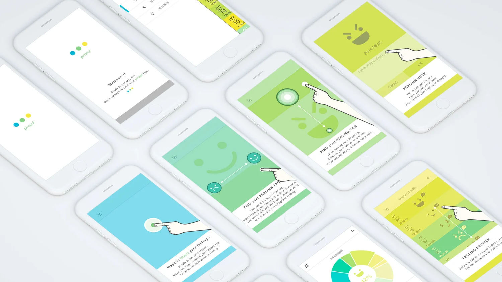
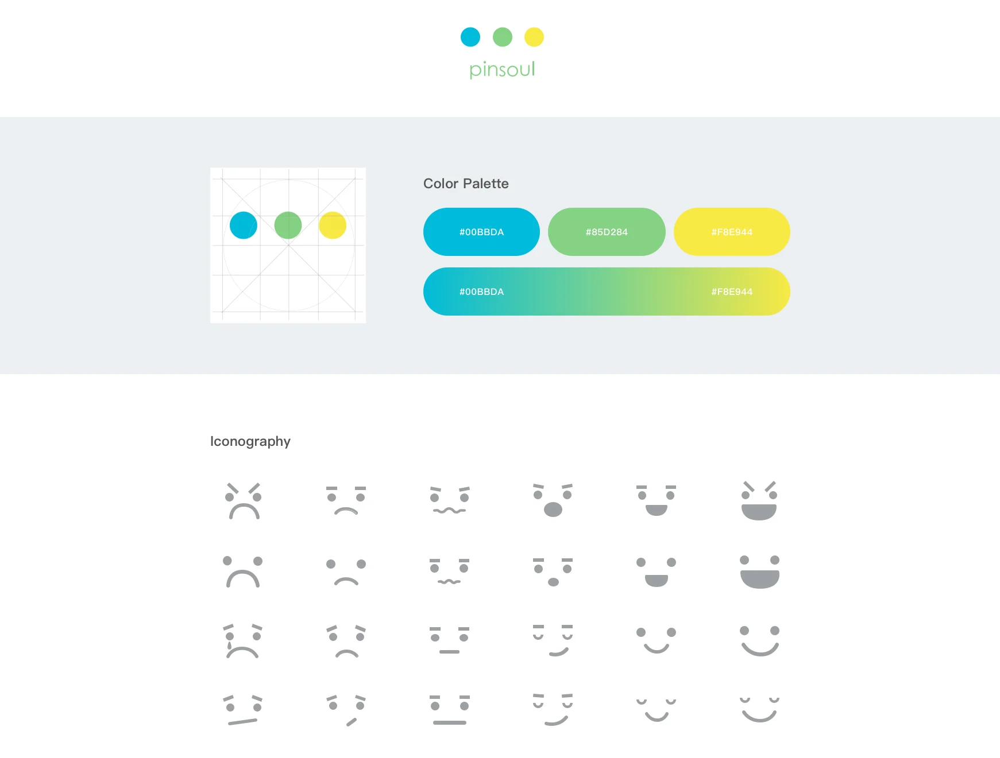
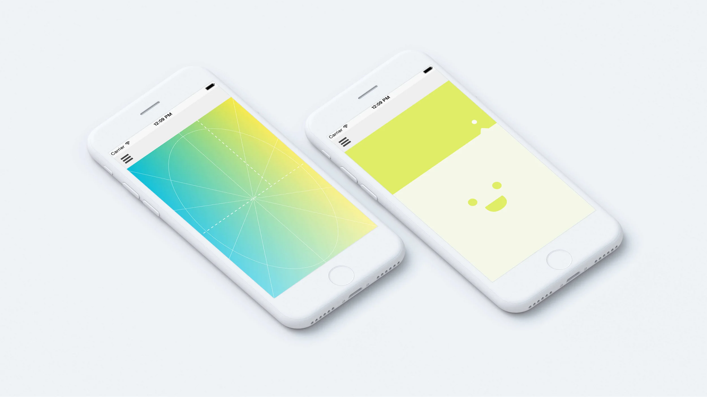
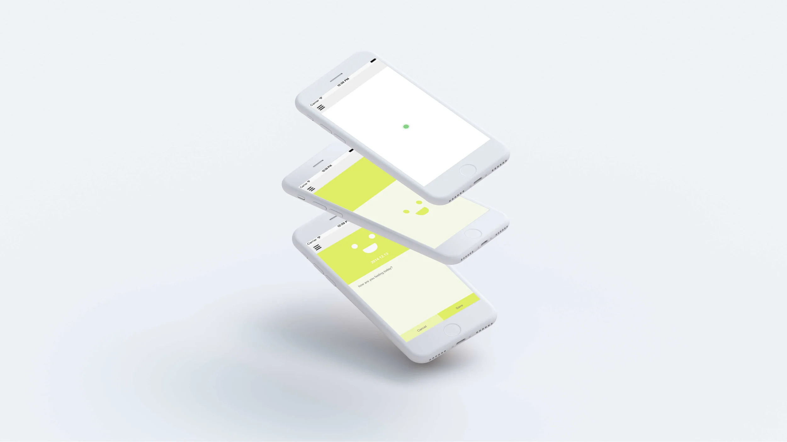
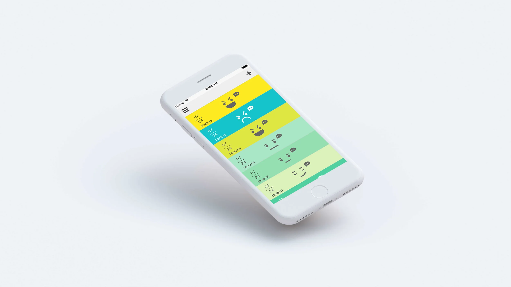

Pinsoul
Psychological Therapy App
Make people live better through the concept of sharing.

Pinsoul
Psychological Therapy App
Pinsoul is a project founded by a group of psychological therapists in the hope of helping people live a better life through the concept of sharing. By using this app, people can trace their feelings and share it with others or professionals in psychology.
Moreover, it offers resources, inspiration, consulting and community to help you change your approach to mental health and open the door for healthier connection.
Pinsoul Style Guide

What is Pinsoul
All the tiny things or the little details that happen in life can contribute to fluctuating emotions, and if one falls often into the hole of negativity, one might just lose passion for life and feel disappointed in oneself. Pinsoul starts out with the motto "make people live better." With Pinsoul, users can record their everyday mood, browse blogs relating to psychology, and find their own identity in order to lead a better life day by day.

An App based on scientific research
Based on numerous counseling cases and scientific research from a group of psychological therapists, Pinsoul implements a simple 2×2 diagram for users to intuitively mark out their emotions: the X axis represents the scale of positivity of the emotion and the Y axis represents the intensity of the emotion.
How to Use Pinsoul

Delicate visual design enables an intuitive way to interact
In the developing process, we looked into the interaction effect between decision-making and perception. By changing both gradient color and color brightness, we turn the emotion diagram into visual elements that can be easily perceived and understood. To record an emotion is simple and intuitive — you simply drag the dot around to change the facial expression of the emoji to the one that best matches yours. Dragging right curves the mouth up for a good mood, and the opposite brings the lips down for a bad mood. The vertical scale represents the intensity of the emotion.

Highly visualized information reduces perceptual differences
Once the matching emoji is set, you simply release the dot and type in your story or thoughts below. This record is stored in "My Mood" list for you to trace back to past emotions anytime. In addition to mood records, you can check graphical statistics about your emotions in percentage, your daily emotional fluctuation, and intensity of physical feelings. The 2×2 diagram allows users to position their emotion more precisely — making the data far more meaningful for therapists compared to describing emotions in words, which can often lead to confusion and misunderstanding.
A Blog that Makes Us Better
The articles in the blogs make information about psychology more available to the public.
The awareness of mental health could be promoted in order to increase the public's insight into their illness. Pinsoul combines Psychology with Technology for users to explore themselves and share their stories simply on the app. We also hope to make great use of the data collected from each individual for services that promote mental health — in order to change the social climate and the way we interact with one another.